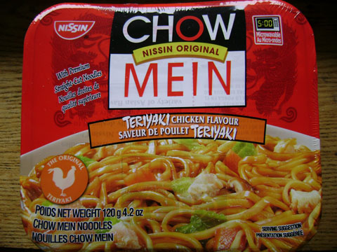

私がカナダに来たのは５年前。
そのころに比べるとお店で手に入るインスタントヌードルの種類がずいぶん増えた。
このインスタントタイプの焼きそばは、水を注いで電子レンジで調理するタイプ。
それなのに、よくパッケージを読まず沸騰したお湯を注いでからそれに気づいたのだった。
そのせいかイマイチな仕上がりに。でもソースは粉末タイプではないところがいい。それでパッケージの写真のように艶やかな見栄えだった。
味は濃いめだったので次にたべるときは別に調理した卵とか野菜とか混ぜてみたらおいしいかも。
 にほんブログ村
にほんブログ村
 にほんブログ村
にほんブログ村